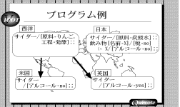

<html>
<head>
<title> Slide No.6 </title>
</head>

<frameset rows="350,*">

<noframes>
<body>
<a href="GIF/slide6.GIF"></a>

<a href="AU/voice6.au">
	</a>[259K]<p>
<!--		-->
これが、今説明した例題を <b> Quixote </b> で記述した
プログラムです。";;" までで一つの文章を示しているので、
例題の文章と <b> Quixote </b> の記述が対応しています。
この記述をよく見ると、文章で説明した例題が <b> Quixote </b>
では自然に記述されているのに気づかれると思います。<p>

さて、ここまでは、<b> Quixote </b> の表現力について
簡単に説明しました。
次に、<b> Quixote </b> は問い合わせにも特徴があるので、それを
説明しましょう。<p>
<!--		-->

<hr>
<a href="slide7.html" target="_top">
	次の OHP へ</a><br><br>
<a href="slide5.html" target="_top">
	前の OHP へ</a><br><br>
<a href="HomePage.html" target="_top">
	OHP の一覧へ</a>
</body>
</noframes>

<frame src="slidebutton6.html">
<frame src="senslide6.html">

</frameset>

</html>